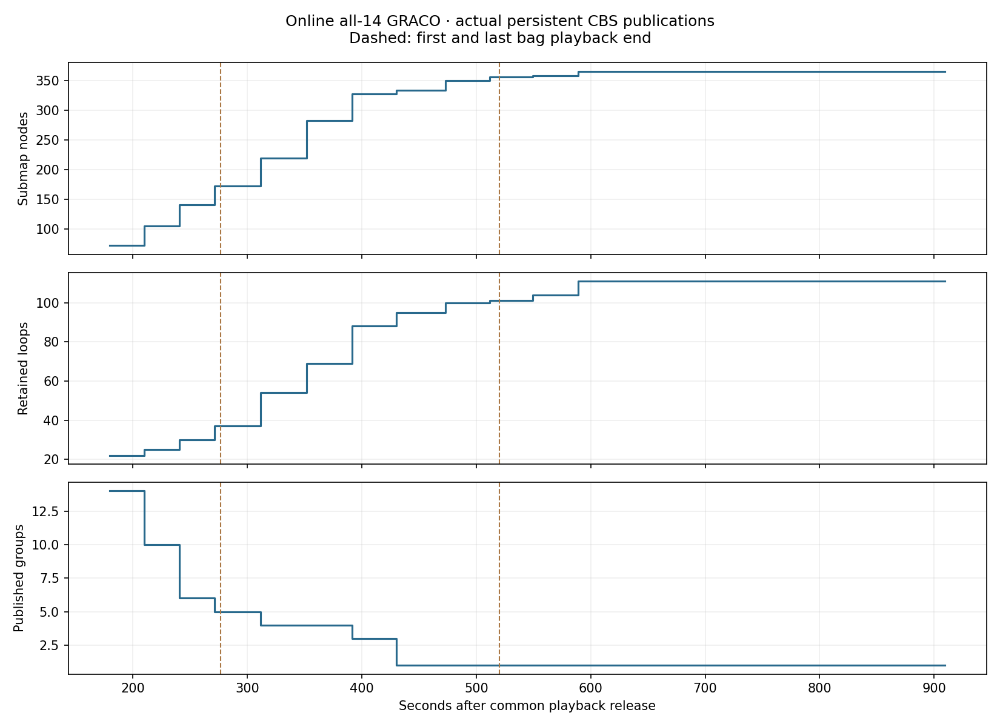
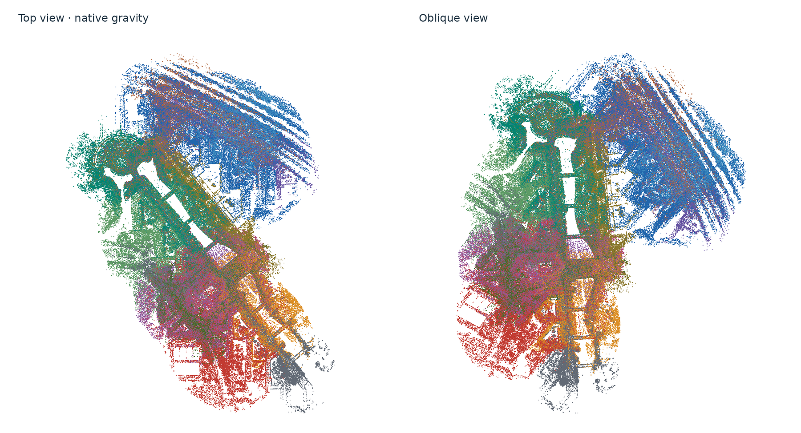

Online GRACO · all 14 robots
All 14 robots formed one aligned component. Fresh simultaneous 1× replay of all 14 GRACO robots on workstation 148: 366 circle submaps, 111 verified loops, 111 PCM-retained loops, 1 final components. This run consumes growing observations and exchanges peer DDS messages during playback.
Immediate freeze → maturation: circles 358 → 366, loops 4 → 111, components 11 → 1, largest component 4 → 14, empty layers 197 → 74, evidence fraction 0.347 → 0.915, communication MB 128 → 547. Fresh independent 1x odometry replays; same calibration and method thresholds, publication policy changed. Lower traffic alone is not a mapping-quality benefit.
Joint ATE by connected component: aerial01 (14 robots): 0.933 m. Evo 1.36.5; corrected IMU-reference GRACO GT; 50 ms association; one rigid alignment per component; no scale fitting.
| Measurement | Immediate freeze | Mature then freeze |
|---|
| Largest connected group | 4 robots | 14 robots |
| PCM-retained loops | 4 | 111 |
| Empty layered descriptors | 197 / 358 | 74 / 366 |
| Observed points in published evidence | 34.7% | 91.5% |
| Application communication | 128.32 MB | 546.77 MB |
| All-14 joint ATE | Unavailable: disconnected | 0.933 m |
All 14 shared a common frame before the last bag ended. The final 0.933 m ATE includes 389 seconds of post-playback settling. Of 111 retained loop constraints, 110 live GPU registration pairs were admitted and passed final support checks; G02/26–G04/4 failed the unchanged initial overlap gate, so only its pose constraint was kept. Tests: 38 passed, three native-gated skips; all 14 Rerun recordings validated.

14-robot map PLY · 13,353,004 points

| Robot | Circles | Raw ATE (m) | CBS individual ATE (m) | Largest update gap (s) | Component |
|---|
| aerial01 | 31 | 0.180 | 0.300 | 0.384 | aerial01 |
| aerial02 | 15 | 0.061 | 0.061 | 0.189 | aerial01 |
| aerial03 | 22 | 0.065 | 0.224 | 0.352 | aerial01 |
| aerial04 | 22 | 0.115 | 0.115 | 0.160 | aerial01 |
| aerial05 | 30 | 0.173 | 0.204 | 0.300 | aerial01 |
| aerial06 | 19 | 0.064 | 0.065 | 0.403 | aerial01 |
| aerial07 | 24 | 0.075 | 0.074 | 0.376 | aerial01 |
| aerial08 | 21 | 0.123 | 0.245 | 0.128 | aerial01 |
| ground01 | 23 | 0.297 | 0.292 | 0.472 | aerial01 |
| ground02 | 30 | 0.649 | 0.679 | 0.328 | aerial01 |
| ground03 | 24 | 0.598 | 0.584 | 0.344 | aerial01 |
| ground04 | 30 | 0.515 | 0.494 | 0.392 | aerial01 |
| ground05 | 46 | 0.477 | 0.462 | 0.312 | aerial01 |
| ground06 | 29 | 0.443 | 0.446 | 0.344 | aerial01 |
First shared alignment after playback release: 430.5 s; available before the first bag ended: False. First all-14 alignment: 430.5 s. Final publication: 909.2 s; post-playback settling: 389.1 s. 13 growing graph revisions; final per-robot iteration counts: 60–62. Iterations target 10 s, randomly selecting pose or anchor exchange each iteration; admission/overruns can take longer.
Circle centers, IDs and creation anchors stay fixed while their unpublished geometry accumulates. Normal publication requires at least 30 seconds of age, no more than 5% growth in both native point IDs and occupied cells over 30 seconds, supported terrain and at least the existing five-feature retrieval minimum. Publication follows permanent ID order. A 120-second deadline bounds head-of-line waiting; end-of-stream tails are explicitly labelled. Publication reasons: {'deadline': 129, 'stable': 188, 'end_of_stream': 49}. Geometry becomes immutable at publication; later observations do not revise it. The input is a growing union of live native 80 m area exports, not every original scan. Published evidence contains 91.5% of final retained point IDs. The 99% footprint coverage target is distinct from frozen-evidence coverage.
Retrieval diagnosis: 74 of 366 circles lacked terrain support; 74 had no layered ORB features. The preserved legacy multilayer configuration has no full-height retrieval fallback. 120 candidates reached 3D verification, with 111 accepted. Matching, terrain, verification, PCM and registration thresholds are unchanged. This trial changes geometry publication only.
Measured application traffic: 546.77 MB total (39.05 MB per robot): retrieval/verification 524.40, PCM 1.21, registration geometry 17.75, CBS 3.41 MB. Actual remote serialized application traffic; peer retrieval fan-out, PCM, geometry exchange, CBS requests and responses. Excludes DDS/IP/discovery, local sensor transport, visualization and downloads. These bytes do not establish a matched win against three-robot baseline runs. Low traffic with few loops and disconnected robots is not an equivalent mapping outcome to the successful staged run.
Measured end-to-end wall time 913.2 s; peak simultaneous process-tree RSS 42.34 GiB. Shared pages may be counted more than once. Whole-device GPU peak: 4135.0 MiB. No host resource quotas. Native callbacks use four threads, numerical libraries one thread per process.
Every published payload was checked against an independent reconstruction of its seal-time observation prefix. Descriptor/evidence hashes, immutable graph prefixes, both-endpoint loop receipt before graph admission, finite chronological odometry, successful-update gaps, final registration support and published loop-transform consistency passed. No frozen graph replay or centralized solve was used to produce this result.
PLY files contain every unique retained native representative once per robot, re-posed by the nearest optimized circle. Uncovered points are retained and flagged. Components are exported separately; native IMU gravity sets their display orientation. GT is used only for trajectory evaluation. Per-robot live Rerun recordings and all bulk inputs remain on 148.
Published BEV gallery · Causality and health audit · Accuracy · Report
Geometry maturation specification and results · Test results · Registration support · Recording validation
CBS computation as the graph grows
The 842 recorded solver updates took 0.351 ms median and 4.499 ms maximum. Full timer callbacks took 1.629 ms median, 32.230 ms at the 95th percentile and 1.189 s maximum. The global graph grew to 366 submaps and 110 admitted GPU registration pairs; each local optimizer had at most 61 variables.
These are native elapsed-time measurements. They exclude the unlogged terminal callbacks and do not measure end-to-end peer response latency. Gray shading marks time after the last bag ends. Pose/anchor labels identify randomly selected outgoing exchange, not strictly alternating solver stages.
Detailed timing, local graph scaling and all 14 robots · Vector PDF · Measured update rows